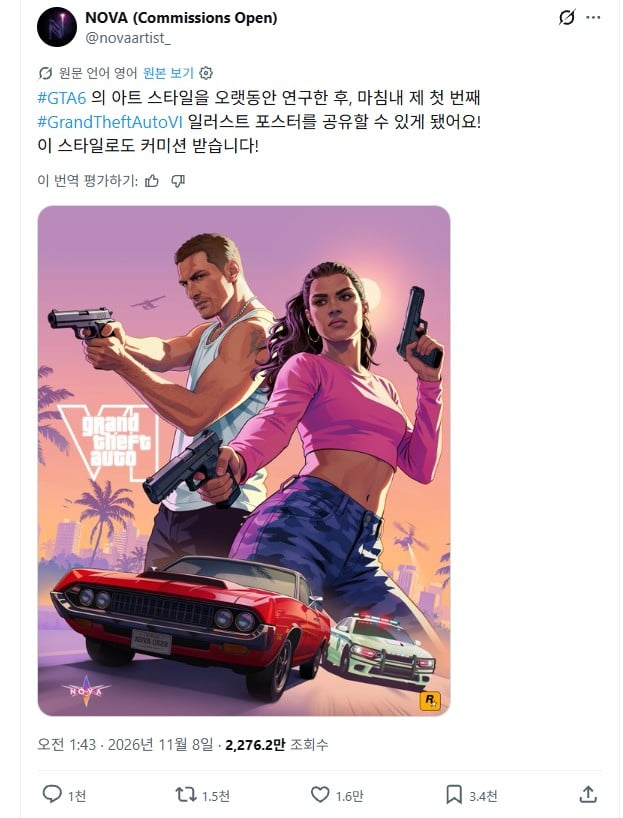
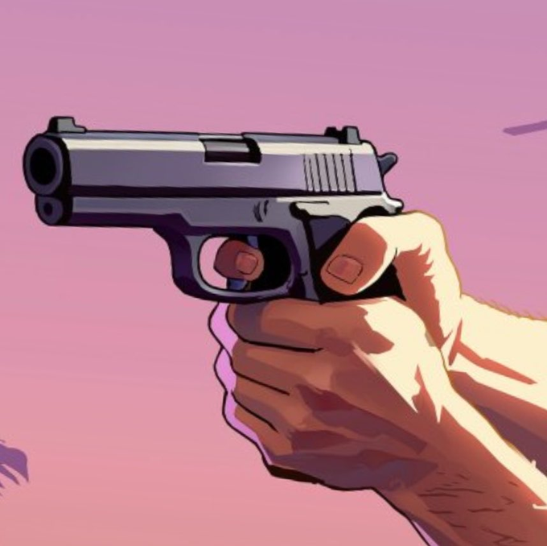
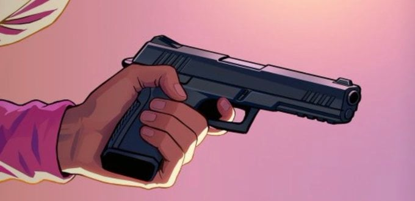
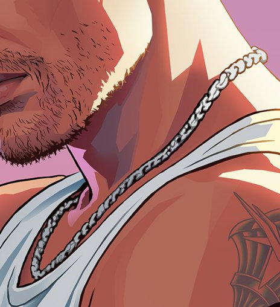
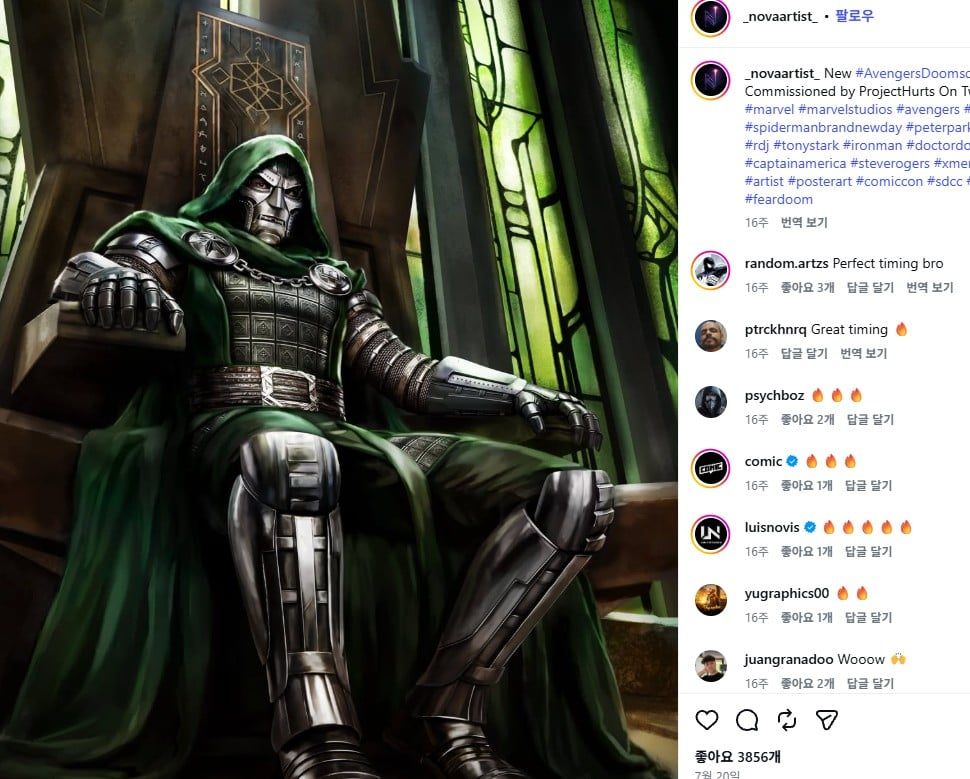
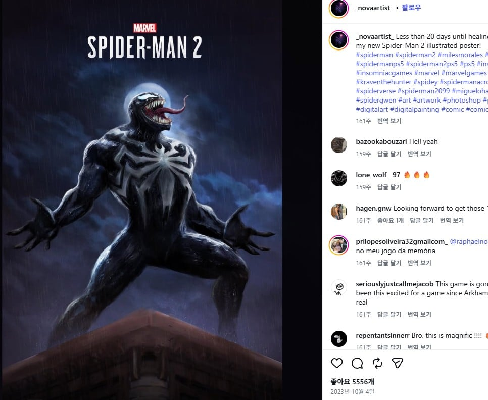
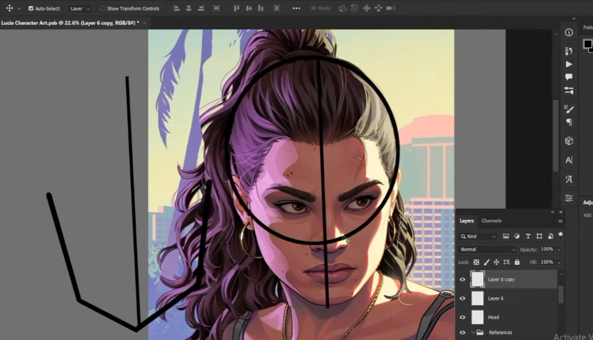
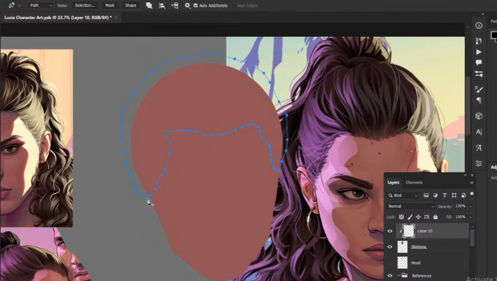
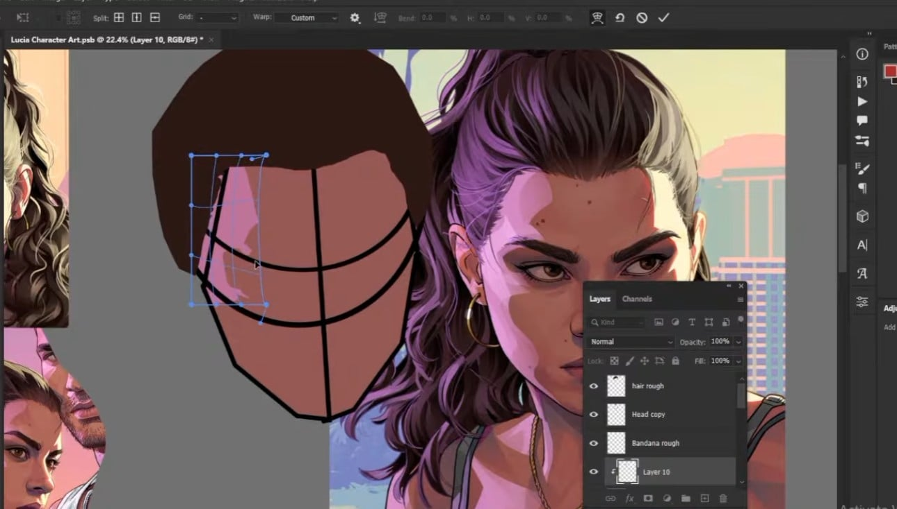
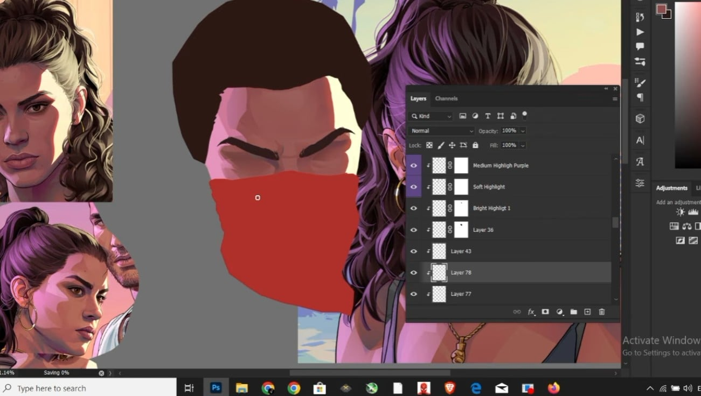

x에 그림쟁이하나가 GTA6 일러스트를 그렸다고 올림.
상당히 잘 그린 것 같은데 자세히보면 이상함
건물 외벽에 거대한 계단

엄지손가락 없음

어색한 총

뭉개진 체인
사람들은 100% ai라고 확신함
근데 이 사람 인스타의 그림들을 보면


2019년도부터 마블 캐릭터들을 주로 그렸음.
그림실력도 나쁘지 않음
아무튼 위 GTA6 일러가 논란이 되자 주인은 드로잉을 직접 보여준다고 함




근데 포토샵을 열어 펜툴을 이용해 마우스로 그리는 중
이런 그림이 없는 건 아니지만 상당히 어설프게 따라하는 느낌
그래도 꾸역꾸역 스트리밍으로 드로잉하는 중인데 구형노트북에 스트리밍까지 하는터라 버퍼링이 엄청 걸리는 중
니가한건 말그대로 회사들어가기위해 준비한 포트폴리오고~ 너가 회사들어가려고 준비한거지 그림이 그리고싶어서 준비한거겠니 ㅋㅋㅋ 포폴 형식맞춰서 그린거잖아 ~ ㅋㅋㅋㅋ회사에 자부심 갖고 시키는거 열심히 하세요. 어쨌든 그림쟁이는 아니시잖아요ㅋㅋㅋㅋ 출근준비 잘 하시구요~ ㅋㅋㅋ